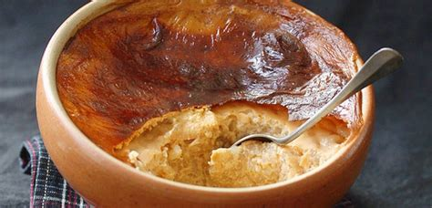
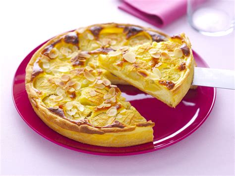
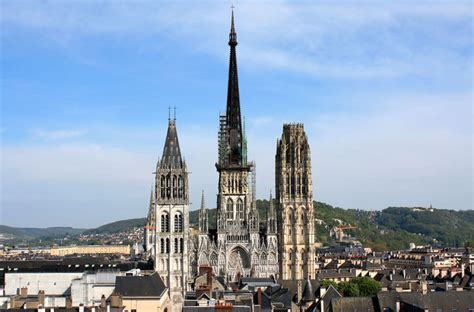
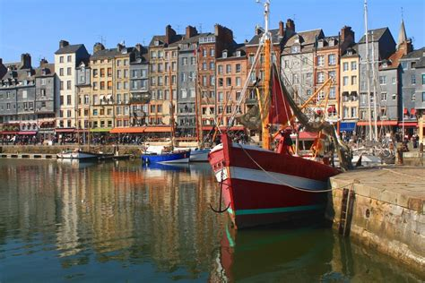
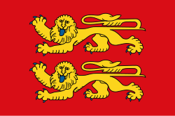

Normandy
Overview
Normandy, located in northwestern France, is a coastal region rich in history and natural charm. It is famous for the D-Day landing beaches of World War II, Mont-Saint-Michel, half-timbered houses, and lush green countryside. Its mix of medieval heritage and seaside landscapes makes it a unique destination.
Quick Facts
- Capital: Rouen
- Regional Language: French (Norman dialect historically)
- Population: ~3.3 million
- Famous For: Mont-Saint-Michel, D-Day beaches, Camembert cheese, cider
- Fun Fact: William the Conqueror, who became the King of England in 1066, was from Normandy!
Popular Dishes
Camembert

Moules à la crème

Teurgoule

Tarte Normande

Famous Landmarks
Mont-Saint-Michel

Omaha Beach

Rouen Cathedral

Honfleur Harbor

Bayeux Tapestry

Best Time to Visit
Late spring to early fall (May to September) offers the most pleasant weather. June is notable for D-Day commemorations. Summer is ideal for beach visits, while autumn is great for cider festivals.
Regional Symbols
- Flag: 
- Coat of arms: